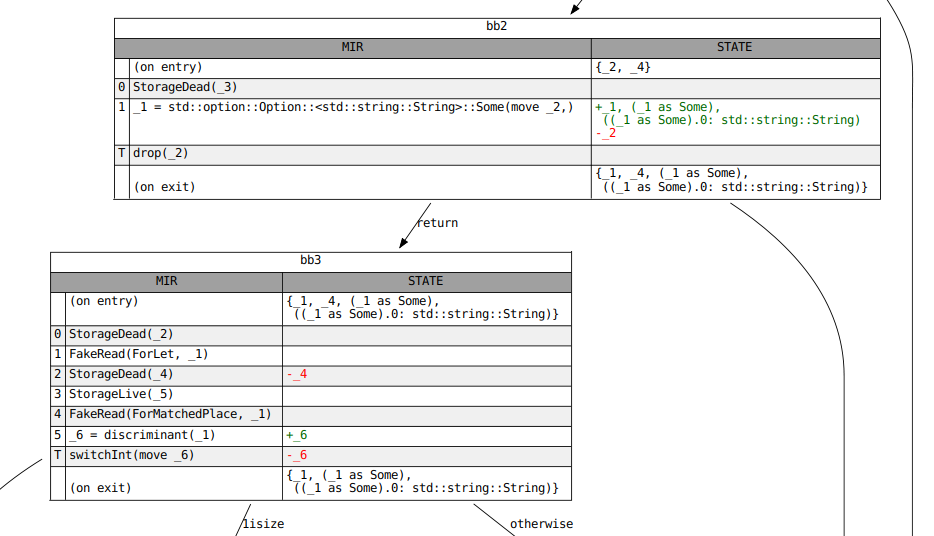

Dataflow Analysis
اگر روی MIR کار کنید، مکرراً با انواع مختلف تحلیل جریان داده (dataflow) روبهرو میشوید.
rustc از dataflow برای یافتن متغیرهای مقداردهینشده، تعیین اینکه چه متغیرهایی در دستور yield یک generator زندهاند، و محاسبهٔ اینکه کدام Placeها در نقطهٔ مشخصی از گراف جریان کنترل borrow شدهاند استفاده میکند.
تحلیل جریان داده مفهوم بنیادی در کامپایلرهای مدرن است و آشنایی با این موضوع برای مشارکتکنندگان آینده مفید خواهد بود.
با این حال، این مستندات مقدمهٔ عمومی تحلیل جریان داده نیست.
صرفاً توصیف چارچوبی است که برای تعریف این تحلیلها در rustc بهکار میرود.
فرض میکند خواننده با ایدههای اصلی و برخی اصطلاحات پایه مثل «تابع انتقال (transfer function)»، «نقطهٔ ثابت (fixpoint)» و «شبکه (lattice)» آشناست.
اگر با این اصطلاحات آشنا نیستید یا مرور سریع میخواهید،
Static Program Analysis کتاب درسی عالی و رایگانی است.
برای کسانی که یادگیری صوتیتصویری را ترجیح میدهند، پیشتر مجموعهای از سخنرانیهای کوتاه از دانشگاه گوته فرانکفورت در YouTube توصیه میکردیم، اما حذف شده است.
برای زمینه این PR و برای سخنرانیهای جایگزین این کامنت را ببینید.
تعریف یک تحلیل جریان داده
تحلیل جریان داده با trait با نام Analysis تعریف میشود.
علاوه بر نوع حالت جریان داده، این trait مقدار اولیهٔ آن حالت را
در ورودی هر بلوک و همچنین جهت تحلیل (جلو یا عقب) تعریف میکند.
دامنهٔ تحلیل جریان داده باید یک شبکه (lattice) باشد
(دقیقاً یک نیمشبکهٔ join) با عملگر join رفتارپذیر.
برای اطلاعات بیشتر مستندات ماژول lattice و همچنین trait با نام JoinSemiLattice را ببینید.
توابع انتقال و اثرها
چارچوب جریان داده در rustc اجازه میدهد هر دستور (و terminator) درون basic block تابع انتقال خودش را تعریف کند.
برای اختصار، این توابع انتقال جداگانه «اثر (effect)» نامیده میشوند.
هر اثر به ترتیب جریان داده بهطور متوالی اعمال میشود،
و با هم تابع انتقال کل basic block را تعریف میکنند.
همچنین میتوان برای یالهای خروجی مشخصی از برخی terminatorها اثر تعریف کرد (مثلاً
apply_call_return_effect برای یال success از terminator با نام Call).
در مجموع، اینها «اثرهای هر یال (per-edge effects)» نامیده میشوند.
“Before” Effects
خوانندگان دقیق مستندات ممکن است متوجه شوند در واقع برای هر دستور و terminator دو اثر ممکن است، اثر «before» و اثر بدون پیشوند (یا «اصلی»). اثرهای «before» بلافاصله پیش از اثر بدون پیشوند اعمال میشوند صرفنظر از جهت تحلیل. به عبارت دیگر، تحلیل عقبرو هنگام محاسبهٔ تابع انتقال یک basic block ابتدا اثر «before» و سپس اثر «اصلی» را اعمال میکند، دقیقاً مثل تحلیل جلورو.
اکثر تحلیلها باید فقط از اثرهای بدون پیشوند استفاده کنند: داشتن چند اثر برای هر دستور تشخیص اینکه مصرفکنندگان باید کجا نگاه کنند را دشوار میکند.
Convergence
تحلیل شما باید به «نقطهٔ ثابت (fixpoint)» همگرا شود، وگرنه تا ابد اجرا میشود. همگرایی به نقطهٔ ثابت فقط راه دیگری برای گفتن «رسیدن به تعادل» است. برای رسیدن به تعادل، تحلیل شما باید از چند قانون پیروی کند. یکی از قوانینی که باید رعایت کند این است که مقدار bottom1 با مقدار دیگری join شود و حاصل برابر مقدار دوم باشد. یا بهصورت معادله:
bottom join x = x
قانون دیگر این است که تحلیل شما باید «مقدار top» داشته باشد بهطوری که
top join x = top
داشتن مقدار top تضمین میکند نیمشبکهٔ شما ارتفاع متناهی دارد، و قانون بالا تضمین میکند وقتی حالت جریان داده به top رسید دیگر تغییر نمیکند (نقطهٔ ثابت همان top خواهد بود).
یک مثال کوتاه
این بخش مثال کوتاهی از تحلیل جریان داده ساده را در سطح بالا ارائه میدهد. همهچیزی را که باید بدانید توضیح نمیدهد، اما امیدواریم بقیهٔ این صفحه را روشنتر کند.
فرض کنید میخواهیم تحلیل سادهای انجام دهیم تا بفهمیم آیا mem::transmute ممکن است تا نقطهٔ مشخصی از برنامه فراخوانی شده باشد.
دامنهٔ تحلیل ما فقط یک bool است که ثبت میکند آیا transmute تاکنون فراخوانی شده است.
مقدار bottom برابر false خواهد بود، چون بهطور پیشفرض transmute فراخوانی نشده است.
مقدار top برابر true خواهد بود، چون بهمحض اینکه تشخیص دهیم transmute فراخوانی شده تحلیل ما کامل است.
عملگر join ما فقط عملگر OR بولی (||) خواهد بود.
از OR استفاده میکنیم نه AND بهخاطر این حالت:
unsafe fn example(some_cond: bool) {
let x = if some_cond {
std::mem::transmute::<i32, u32>(0_i32) // transmute was called!
} else {
1_u32 // transmute was not called
};
// Has transmute been called by this point? We conservatively approximate that
// as yes, and that is why we use the OR operator.
println!("x: {}", x);
}بررسی نتایج یک تحلیل جریان داده
پس از ساخت تحلیل، باید iterate_to_fixpoint را فراخوانی کنید
که Results برمیگرداند و حالت جریان داده در نقطهٔ ثابت را هنگام ورود به هر بلوک دارد.
پس از داشتن Results، میتوانید حالت جریان داده در نقطهٔ ثابت را در هر نقطه از CFG بررسی کنید.
اگر فقط حالت را در چند مکان لازم دارید (مثلاً هر terminator از نوع Drop) از ResultsCursor استفاده کنید. اگر
حالت را در هر مکان لازم دارید، ResultsVisitor کارآمدتر است.
Analysis
|
| iterate_to_fixpoint()
|
Results
/ \
into_results_cursor(…) / \ visit_with(…)
/ \
ResultsCursor ResultsVisitor
برای مثال، کد زیر از ResultsVisitor استفاده میکند…
// Assuming `MyVisitor` implements `ResultsVisitor<FlowState = MyAnalysis::Domain>`...
let mut my_visitor = MyVisitor::new();
// inspect the fixpoint state for every location within every block in RPO.
let results = MyAnalysis::new()
.iterate_to_fixpoint(tcx, body, None);
results.visit_with(body, &mut my_visitor);`در حالی که این کد از ResultsCursor استفاده میکند:
let mut results = MyAnalysis::new()
.iterate_to_fixpoint(tcx, body, None);
.into_results_cursor(body);
// Inspect the fixpoint state immediately before each `Drop` terminator.
for (bb, block) in body.basic_blocks().iter_enumerated() {
if let TerminatorKind::Drop { .. } = block.terminator().kind {
results.seek_before_primary_effect(body.terminator_loc(bb));
let state = results.get();
println!("state before drop: {:#?}", state);
}
}Graphviz Diagrams
وقتی نتایج تحلیل جریان داده آنطور که انتظار دارید نیست، اغلب تجسم آنها کمک میکند.
این را میتوان با پرچمهای -Z dump-mir که در اشکالزدایی MIR توضیح داده شده انجام داد.
با -Z dump-mir=F -Z dump-mir-dataflow شروع کنید، که F
یا «all» است یا نام بدنهٔ MIR مورد علاقهٔ شما.
این فایلهای .dot در پوشهٔ mir_dump شما ذخیره میشوند و
NAME تحلیل (مثلاً maybe_inits) را در نام فایلشان دارند. هر
تجسم حالت کامل جریان داده را هنگام ورود و خروج از هر بلوک، و همچنین هر تغییری که در هر دستور و terminator رخ میدهد نشان میدهد.
مثال زیر را ببینید:

-
هدف اصلی مقدار bottom این است که حالت اولیهٔ جریان داده باشد. حالت ورودی هر basic block پیش از شروع تحلیل به bottom مقداردهی میشود. ↩